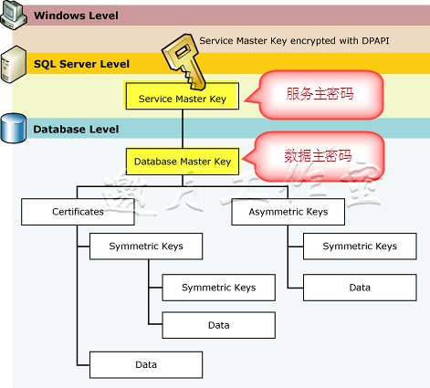

| SQL Server |
在SQL Server中的加密由层次结构形式进行处理以提供多级别的安全。SQL Server包含两个用于加密数据的密钥类型。如下图：

1、 服务器主密钥（Service Master Key）,位于层次结构的最顶端，并且在安装SQL Server时自动创建，用于加密系统数据、链接的服务器登录名以及数据库主密钥。
在第一次通过SQL Server使用服务主密钥来加密证书、数据库主密钥或链接的服务器主密码时，服务主密钥会自动生成，并且使用SQL Server服务账户的Windows证书来生成它。
如果必须改变SQL Server服务账号，微软建议使用SQL Server配置管理器，因为这个工具将执行生成新服务主密钥需要的合适的解密和加密方法，而且可以使加密层次结构保持完整。
服务主密钥也用于加密其下的数据库主密钥。
2、 数据库主密钥（Database Master Key）,用于加密证书，以及非对称密钥和对称密钥。
所有数据库都可以只包含一个数据库主密钥，在创建它时，通过服务主密钥对其加密。
创建非对称密钥时，可以决定在加密非对称密钥对应的私钥是否包含密码。
如果示包含密码，将使用数据库主密钥来加密私钥。
备份及还原服务主密钥
BACKUP SERVICE MASTER KEY 导出服务主密钥。
RESTORE SERVICE MASTER KEY 从备份文件中导入服务主密钥。
-- 以下语句备份服务主密钥到 E:\SMK.bak
-- 注意该密码可以使用单引号
BACKUP SERVICE MASTER KEY
TO FILE='E:\SMK.bak'
ENCRYPTION BY PASSWORD ='MakeItAGoodOne!1AB'
go
--恢复服务主密钥
RESTORE SERVICE MASTER KEY
FROM FILE='E:\SMK.bak'
DECRYPTION BY PASSWORD ='MakeItAGoodOne!1AB'
go
创建、再生成和删除数据库主密钥
CREATE MASTER KEY 创建数据库主密钥
ALTER MASTER KEY 重新生成数据库主密钥
DROP MASTER KEY 删除数据库主密钥
IF NOT EXISTS (SELECT name FROM sys.databases WHERE name ='BookStore')
BEGIN
CREATE DATABASE BookStore
END
GO
USE BookStore
GO
--创建数据库主密钥
CREATE MASTER KEY ENCRYPTION BY PASSWORD ='password'
go
USE BookStore
GO
--重新生成数据库主密钥
ALTER MASTER KEY FORCE REGENERATE WITH ENCRYPTION BY PASSWORD ='password'
go
--删除数据库主密钥
USE BookStore
GO
DROP MASTER KEY
go
备份、恢复一个数据库主密钥
BACKUP MASTER KEY导出服务主密钥。
RESTORE MASTER KEY从备份文件中导入数据库主密钥。
--备份数据库主密钥
USE BookStore
GO
-- 先创建 （因为上面的例子，最后把主密钥删除了）
CREATE MASTER KEY ENCRYPTION BY PASSWORD ='MagneticFields!'
GO
-- 备份.
BACKUP MASTER KEY
TO FILE='E:\BookStore_Master_Key.BAK'
ENCRYPTION BY PASSWORD ='4D280837!!!'
-- 删除.
DROP MASTER KEY
go
--恢复数据库主密钥
RESTORE MASTER KEY
FROM FILE='E:\BookStore_Master_Key.BAK'
DECRYPTION BY PASSWORD ='4D280837!!!'
ENCRYPTION BY PASSWORD ='MagneticFields!'
GO
|